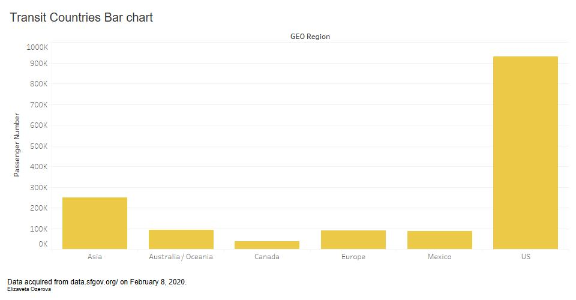

This would be an excellent place to describe what this page is for, what to find in different sections, describe any motivation or theme behind your visualizations, and so on.
You should not use this template unless you intend to customize it. Make it your own. Keep in mind this simple template is over 300 lines! You can see other examples of websites using Bulma at their showcase: bulma.io/expo/.
Wrangling
Perhaps you had to do some data wrangling to the original dataset to prepare it for visualization. This would be a great place to discuss some of that wrangling.
Tableau Prototype

Prototype description!!
Visualization
Ideally not everything would be on a single page like this example. Instead, you might want to put each section in its own webpage. You would need to carefully replicate the page template (with the header, navbar, and footer) and make the necessary updates. For example, you want the "About" navbar item to be considered active on an "About" web page.
For now this is just a demo. The buttons below do not go anywhere, but can be easily changed to link to different visualization pages.
Writeups
How to interpret your visualization, indicating how the data is encoded. For example, “passenger count is encoded by the length of the bar, so longer bars represent higher passenger count.”
Any per-visualization data wrangling you performed on the original dataset, and how you wrangled the data (e.g. Tableau, Excel, using the website interface). Link to the wrangled data when possible.
One conclusion you can make about the data using your visualization. The conclusion should ideally be something that a simple statistic could not replace. For example, “airline X has the highest passenger count over this time period” is a simple conclusion that will meet this requirement, but may not earn a plus-level letter grade.
Here is a brief bio about yourself. A good rule of thumb is to include at least one technical tidbit (favorite area or course within computer science), and one fun tidbit (such as loving dogs).